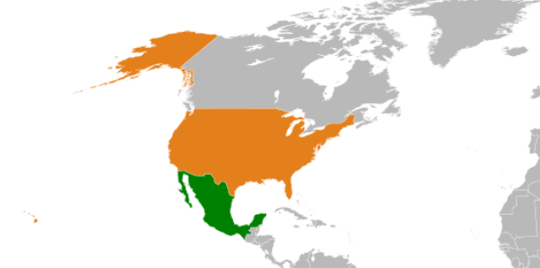
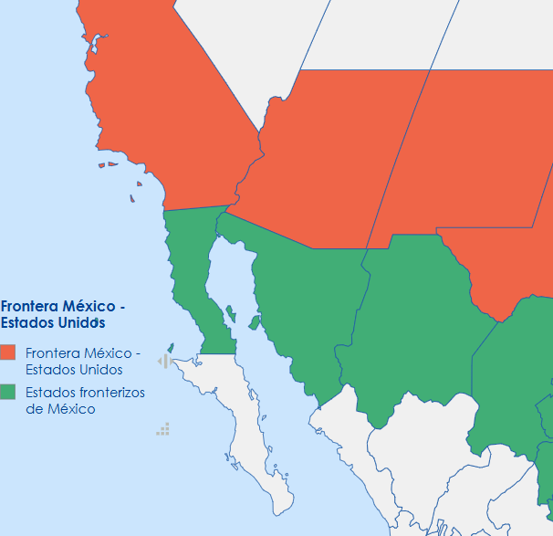
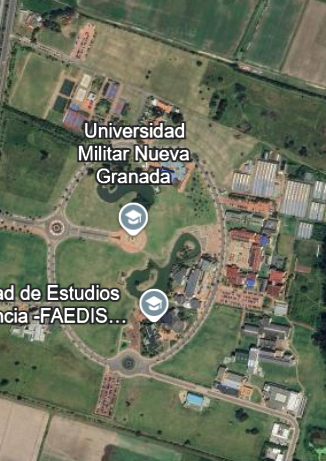
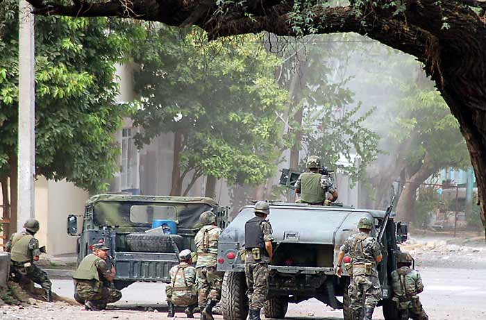

Estrategias Conjuntas entre México y Estados Unidos en la Lucha contra el Fentanilo
Introducción
La crisis del fentanilo ha emergido como una de las mayores amenazas a la salud pública y seguridad en América del Norte. Este opioide sintético, cuya potencia es 50 veces más fuerte que la heroína, ha causado miles de muertes en Estados Unidos y representa un grave desafío en términos de control y prevención. La mayor parte del fentanilo que se trafica en Estados Unidos tiene su origen en México, lo que ha creado una situación de interdependencia entre ambos países para abordar el problema. A pesar de los esfuerzos a nivel nacional e internacional, la magnitud de la crisis ha demostrado que se requiere una cooperación política sólida y sostenida entre ambos gobiernos para combatir eficazmente el tráfico y consumo de esta droga.
De igual forma, el propósito central de esta investigación es examinar la colaboración entre Estados Unidos y México en su esfuerzo por combatir la crisis del fentanilo. enfocándose en las políticas, acuerdos y estrategias conjuntas que se han implementado para enfrentar esta grave crisis. Este estudio examinará el papel de las relaciones diplomáticas y las iniciativas políticas que ambos países han llevado a cabo para coordinar esfuerzos en la interdicción de drogas, el control de sustancias ilícitas y el fortalecimiento de la seguridad fronteriza.
Entendiendo lo anterior, la relevancia de este trabajo radica es la necesidad urgente de una respuesta conjunta para mitigar los efectos devastadores del fentanilo. Mientras que las políticas nacionales de ambos países son importantes, la cooperación política es esencial para cambiar la dinámica del tráfico de fentanilo. Este análisis contribuirá a identificar tanto los avances como los desafíos que enfrentan ambos gobiernos en la implementación de políticas efectivas, y cómo estos esfuerzos pueden evolucionar para mejorar los resultados.
Objetivos
Objetivo General
Analizar las estrategias conjuntas entre Estados Unidos y México para combatir la crisis del fentanilo
Objetivos Específicos
Realizar una revisión bibliográfica exhaustiva para fundamentar teóricamente el tema de investigación.
Analizar los datos obtenidos a través de entrevistas y encuestas con el fin de identificar la problemática relacionada con la crisis del fentanilo.
Difundir los resultados obtenidos mediante la publicación en una página web accesible.
Información de Marcos
Marco Geográfico-Espacial
A continuación, se presenta de manera geográfica el contexto donde se desarrolló la investigación.
En esta sección se muestra la ubicación tanto de los países involucrados, México y Estados Unidos, como el área específica de la frontera común, la cual es fundamental para el análisis del tráfico de fentanilo. Asimismo, se incluye la localización de la Universidad Militar Nueva Granada en Colombia, que fue el espacio donde se aplicaron las encuestas y entrevistas. De esta forma, se delimita claramente la población objetivo y el ámbito espacial que sustenta este estudio, utilizando mapas detallados que permiten visualizar los puntos clave de la investigación.
Mapas del Marco Espacial

Mapa 1. Ubicación general de México y Estados Unidos

Mapa 2. Detalle de la frontera entre México y Estados Unidos

Mapa 3. Universidad Militar Nueva Granada y zona de encuestas
Marco Histórico
En el marco histórico se desarrolló una línea del tiempo que comienza en el año 2006, con el inicio de la llamada "guerra contra el narcotráfico" en México, declarada por el entonces presidente Felipe Calderón. A partir de este momento, se ha documentado una intensificación de los conflictos armados entre cárteles, un aumento en la presencia militar en diversas regiones del país y un endurecimiento de las políticas de seguridad en la frontera con Estados Unidos.
La cronología avanza hasta el presente, mostrando la evolución del tráfico de drogas, en especial el auge del fentanilo como sustancia clave en el comercio ilegal. También se abordan los efectos sociales, políticos y transnacionales del fenómeno, así como la respuesta institucional tanto de México como de Estados Unidos, incluyendo operativos binacionales, políticas de control fronterizo y reformas legislativas.
<
Imágenes del Marco Histórico

Imagen 1. Inicio de la guerra contra el narcotráfico (2006)Imagen 2. Firma del Entendimiento Bicentenario (2021)
Marco Legal
El marco legal nos brinda información sobre las leyes, acuerdos y tratados aplicables en la lucha contra el tráfico de fentanilo. Se consideran tanto las disposiciones de la Constitución Política de los Estados Unidos Mexicanos como los convenios bilaterales con Estados Unidos, proporcionando una base jurídica clave para comprender cómo se regula la cooperación internacional, la persecución del narcotráfico y el control de sustancias químicas utilizadas para la fabricación de opioides sintéticos.
Metodología
Diseño Metodológico
Enfoque
Instrumentos o Herramientas
La investigación empleó un enfoque mixto de tipo descriptivo, combinando técnicas cualitativas y cuantitativas para observar y analizar las características del fenómeno.
Se utilizó un enfoque mixto con predominancia descriptiva, lo que permitió captar tanto datos numéricos como percepciones relacionadas con la problemática del fentanilo.
Se aplicaron encuestas a estudiantes y miembros de la comunidad universitaria, permitiendo obtener información contextual relevante desde el ámbito académico.